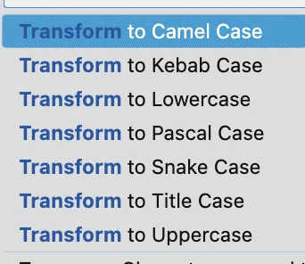

마우스로 내가 원하는 메뉴의 버튼에 커서를 움직여 클릭하는 일은 흔히들 말하는 "총 게임"을 하는 것과 같다고 생각한다.
난 총 게임을 잘 못 한다. 그래서 키보드 단축키를 사용하는 것을 선호한다.
새로운 맥 환경을 세팅할 때마다 내가 쓰던 여러 가지 단축키 설정 등을 등록하는데, 나중을 위해 여기에 기록해두려고 한다.
Vim Extension을 설치해서 기본 방향키 대신 Vim 방향키와 함께 단축키를 사용한다.
그리고 확장 프로그램의 설정을 일부 바꿔서 기본 단축키와 충돌하는 것이라던가
$ 를 입력할 때 커서가 다음 줄로 이동한다던가 하는 설정들을 바꿔 사용한다.
{
"vim.camelCaseMotion.enable": true,
"vim.highlightedyank.enable": true,
"vim.useSystemClipboard": true,
"vim.normalModeKeyBindingsNonRecursive": [
// camel-case-navigation을 위한 설정
{ "before": ["w"], "after": ["\\", "w"] },
{ "before": ["b"], "after": ["\\", "b"] },
{ "before": ["e"], "after": ["\\", "e"] },
{ "before": ["S-w"], "after": ["w"] },
{ "before": ["S-b"], "after": ["b"] },
{ "before": ["S-e"], "after": ["e"] },
// `d`를 이용해 삭제된 내용이 클립보드로 들어가지 않게 하기 위한 설정
// 유용하게 쓰고 있진 않다.
{
"before": ["d"],
"after": ["\"", "_", "d"]
},
{
"before": ["D"],
"after": ["\"", "_", "D"]
},
{
"before": ["d", "d"],
"after": ["\"", "_", "d", "d"]
}
],
"vim.visualModeKeyBindingsNonRecursive": [
// camel-case-navigation을 위한 설정
{ "before": ["w"], "after": ["\\", "w"] },
{ "before": ["b"], "after": ["\\", "b"] },
{ "before": ["e"], "after": ["\\", "e"] },
{ "before": ["S-w"], "after": ["w"] },
{ "before": ["S-b"], "after": ["b"] },
{ "before": ["S-e"], "after": ["e"] },
// `$`키가 다음 라인의 첫 번째 인덱스로 커서를 이동시키지 않게 하기 위한 설정
{ "before": ["$"], "after": ["g", "_"] },
{ "before": ["g", "_"], "after": ["$"] }
]
}
Add Selection To Next Find Match (Command D)
현재 커서 위치에 있는 word를 select한다. 반복 선택하면 여러 개를 select할 수 있다. 중복 텍스트를 한 번에 수정할 때 유용하다.
Show or Focus Hover (Command K, Command I)
코드에 표시되는 이른바 노란 줄, 빨간 줄에 마우스 커서를 올려 표시되는 메시지를 이 단축키로 표시할 수 있다.
View: Open Previous Editor (Shift Command H)
View: Open Next Editor (Shift Command L)
현재 활성화된 탭을 기준으로 좌/우에 열려 있는 탭으로 포커스를 이동한다.
View: Move Editor into Previous Group (Control Command H)
View: Move Editor into Next Group (Control Command H)
현재 활성화된 탭을 좌/우에 있는 탭 그룹으로 이동시킨다.
View: Show Explorer (Shift Command E)
File: New File… (Command N, Command F, when: filesExplorerFocus)
File: New Folder… (Command N, Shift Command F, when: filesExplorerFocus)
탐색기를 열어 새로운 파일이나 폴더를 생성하는 단축키
신규 페이지를 작업할 땐 컴포넌트 폴더나 파일들을 자주 생성할 때가 많은데, 그 때마다 유용하다.
View: Show Source Control (Control Shift G)
Git에 작업사항을 반영할 때 작업사항을 리뷰하는 겸
Commit을 분리하는 겸으로 창을 열어 확인한다.
Show All Commands (Shift Command P)
VSCode의 기능들을 검색해서 사용할 수 있다.
단축키로 등록하지 않은 기능들은 키워드만 알고 있다면 이 검색을 통해서 편리하게 실행이 가능하다.
나는 Transform to … 시리즈를 가끔 검색해서 사용한다.

Go to File… (Command P)
검색을 통해서 원하는 파일에 빠르게 이동할 수 있다.
파일 탐색기를 열어서 폴더를 열어 가며 파일을 열 필요가 없다.
File: Save without Formatting (Command K, S)
Formatter를 일부러 동작시키고 싶지 않은 경우가 가끔씩 생기는데, 그 경우에 사용한다.
내 경우에는 GraphQL Code Generator같이 내가 직접 생성하지 않는 파일에 가끔 사용했다.
Format Document (Shift Option F)
반대로 저장은 하지 않고 Formatter만 동작시키고 싶을 때 사용한다.
포맷팅이 되지 않은 코드나 JSON 등을 깔끔하게 보고 싶을 때 사용했다.
대상이 되는 텍스트를 복사해서, Command N으로 새 파일을 열고 이 단축키를 입력
파일을 저장하지 않고도 포맷팅한 결과를 볼 수 있다.
Change Language Mode (Command K, M)
현재 연 파일을 어떤 타입의 문서로 인식할 지 변경하는 단축키
기본적으로는 파일 확장자를 통해 문서 타입을 인식하지만 (.ts, .css) 위의 Format Document를 사용하는 예시에서는
입력한 콘텐츠의 내용에 따라 자동으로 타입이 선택되는데, 이를 전환하는 용도로 사용할 수 있다.
다른 출처에서 텍스트를 복사해오는 경우 의도치 않게 소스 코드가 Plain Text로 인식되거나 하는 경우가 있는데, 그런 경우에 자주 사용했다.
보통은 프로젝트별로 다르게 설정되는 경우가 많은데, 비교적 널리 쓸 수 있는 몇 가지만 골라 봤다.
{
"export default": {
"scope": "javascript,typescript,javascriptreact,typescriptreact",
"prefix": "exportdefault",
"body": ["export { default as $1 } from './$1/$1';"],
"description": "export default auto completion"
},
"console.log": {
"scope": "javascript,typescript,javascriptreact,typescriptreact",
"prefix": "clg",
"body": ["console.log($1);"]
},
"console.debug": {
"scope": "javascript,typescript,javascriptreact,typescriptreact",
"prefix": "cdb",
"body": ["console.debug($1);"]
},
"flex-row style": {
"scope": "css,scss",
"prefix": "flexrow",
"body": ["display: flex;", "flex-direction: row;"]
},
"flex-column style": {
"scope": "css,scss",
"prefix": "flexcolumn",
"body": ["display: flex;", "flex-direction: column;"]
},
"flex-center style": {
"scope": "css,scss",
"prefix": "flexcenter",
"body": ["align-items: center;", "justify-content: center;"]
}
}